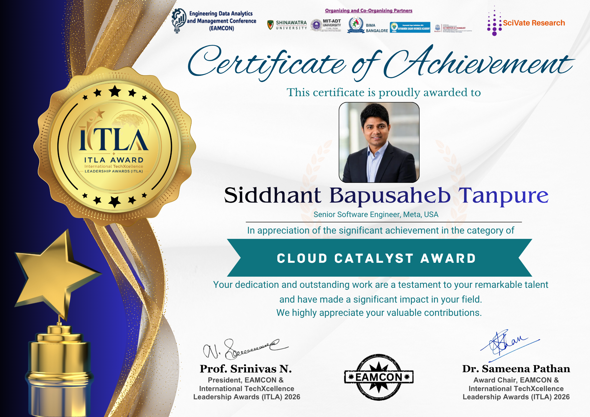
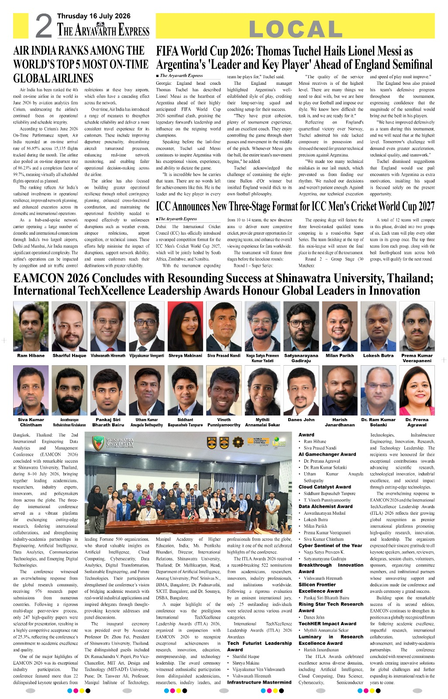
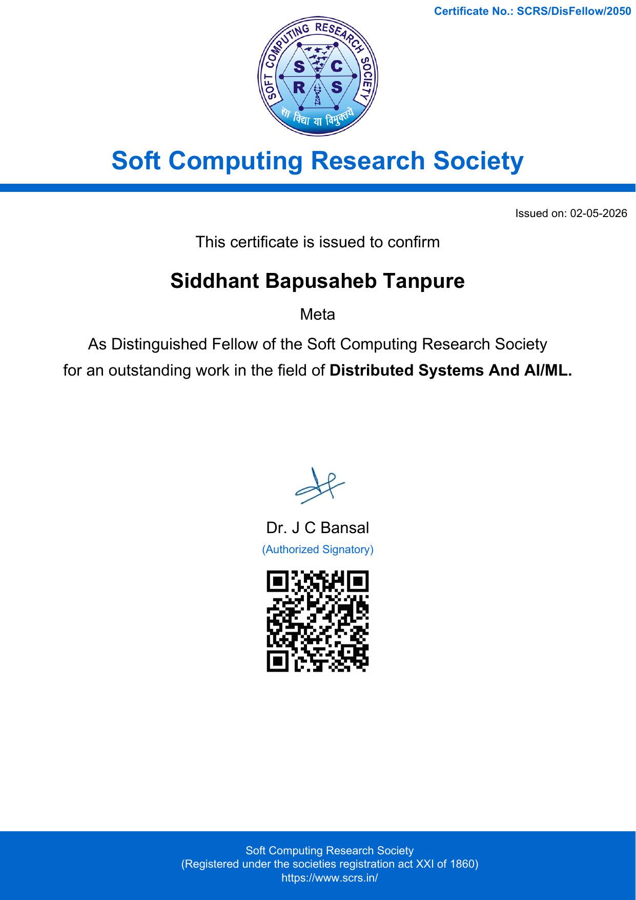
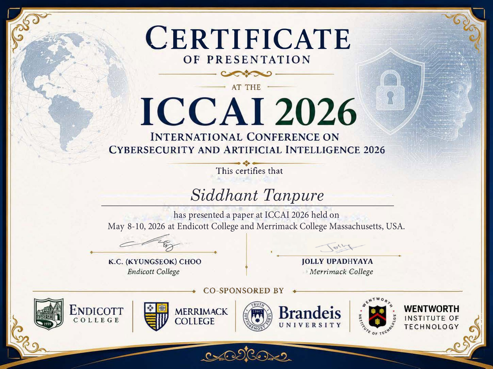
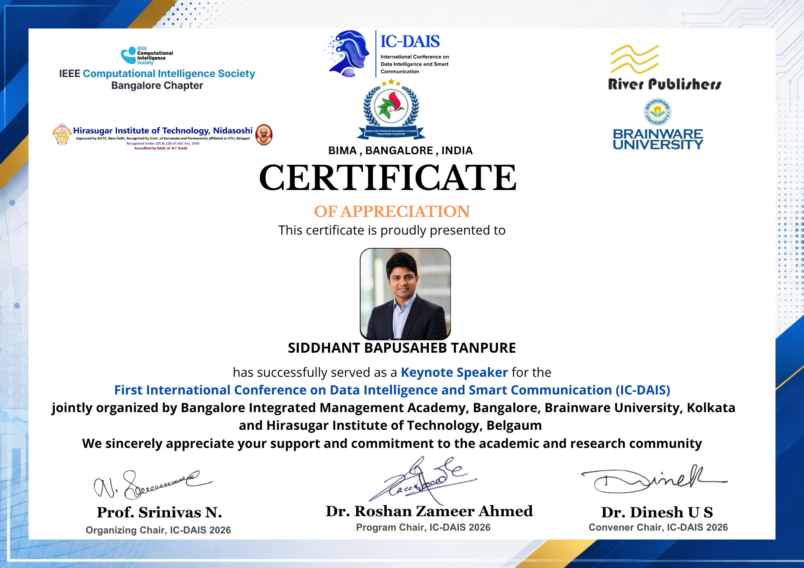

Distributed systems
High-throughput processing, orchestration, data movement, recovery, and fault-tolerant platform design.
Senior Software Engineer / AI infrastructure / Distributed systems
I'm Siddhant Tanpure, a Senior Software Engineer with 10+ years of experience building privacy-aware AI infrastructure, resilient distributed systems, and large-scale data platforms across Meta, Microsoft, and Rackspace.
About
Technology, judgement, and durable impact
I work at the intersection of distributed systems, privacy, machine learning, and operational resilience. My focus is not only delivering a system, but establishing the architecture, standards, and ownership model that allow it to operate responsibly at scale.
Across advertising infrastructure, enterprise collaboration, and open source, I have led consequential technical decisions, built platforms used globally, improved reliability and cost efficiency, and helped engineers grow into independent senior contributors.
Areas of expertise
My work connects deep systems engineering with the governance, communication, and people leadership required to sustain it.
High-throughput processing, orchestration, data movement, recovery, and fault-tolerant platform design.
Signals, safety modelling, data quality, model inputs, and production controls for AI-enabled systems.
Governed interfaces, data minimisation, aggregation, policy compliance, and secure data lifecycle design.
Availability, observability, disaster recovery, sovereign cloud, and operational readiness at enterprise scale.
Architecture direction, design approval, cross-functional alignment, standards, and risk-based decisions.
Mentoring, production ownership, technical communication, and growing independent decision-makers.
Selected work
Three examples show how I approach privacy, resilience, performance, and public technical contribution across different environments.
Established the architecture and operating standards for a governed first-party signals platform used by risk detection, AI safety modelling, ranking, and advertising-intelligence workloads.
Designed production infrastructure for Microsoft Teams messaging, including a new point-in-time recovery capability and large-scale data lifecycle systems.
Contributed fixes and reliability improvements to PyTorch, helping strengthen a framework used throughout AI research and production.
BCS Fellowship evidence
The portfolio stands independently as a record of my work. This section maps selected evidence to the four experiential-route criteria in my BCS Fellowship application.
Criterion 01 / Body of work
Technical authority for privacy-aware signal infrastructure supporting Meta's global advertising and AI systems.
SituationAt Meta, evolving privacy regulations and platform policies, including GDPR, CCPA, and Apple ATT, changed how advertising systems could use first- and third-party data. The First-Party Data organisation needed a governed way to preserve useful advertising and integrity signals while meeting privacy, reliability, and policy requirements at global scale.
TaskServing as a distributed-systems and privacy technical lead within the initiative, I was accountable for the strategy governing how signals were produced and consumed. I defined the architectural blueprint, established non-negotiable engineering standards, directed design proposals across partner teams, and provided final technical approval before production integration.
ActionI architected distributed processing used to produce and validate integrity signals across more than 10 billion daily events. I separated identity-bearing source data from model-consumable aggregates, making governed signal contracts the standard interface instead of direct raw-event reuse. I established platform-wide requirements for signal definitions, aggregation, validation, freshness, monitoring, alerting, failure handling, and accountable ownership. I also introduced formal reviews requiring teams to document intended use, privacy boundaries, failure modes, and operational-response plans. Where a proposal did not meet privacy, reliability, or production-readiness expectations, I redirected the design and required remediation before approval. Across organisations, I led trade-offs involving data utility, privacy controls, delivery constraints, and system reliability.
ResultThe architecture and standards now provide a consistent framework for developing and integrating signals used by risk-detection, AI safety modelling, ranking, and advertising-intelligence workloads. The significance of the responsibility was not limited to delivering an individual pipeline: I set technical direction, governed production-facing decisions, and remained accountable for the privacy, performance, and reliability characteristics of a global platform.
Evidence summary
Set architectural direction, challenged designs, required corrective changes, and approved production integration.
Governed infrastructure producing and validating signals across more than 10 billion daily events.
Standards for privacy, validation, observability, and ownership were reused across the wider platform.
Criterion 02 / Professional impact
Developing engineers who can independently lead architecture, cross-team coordination, and production systems.
SituationBuilding large-scale advertising and foundation-level AI infrastructure requires engineers to develop specialised judgement across distributed architecture, privacy preservation, real-time signal quality, operational reliability, and incident management. They must make defensible decisions under ambiguity, coordinate across organisational boundaries, and retain ownership of live systems after launch.
TaskAlongside my architectural responsibilities at Meta, I directly mentored more than five engineers across different organisations. My objective was to help them progress from completing task-level components to independently leading significant AI and distributed-infrastructure initiatives, communicating effectively with cross-functional stakeholders, and making and defending consequential technical decisions.
ActionI used regular one-to-one coaching, architecture reviews, technical roadmapping, performance feedback, and production-readiness exercises. Rather than prescribing solutions, I required engineers to compare alternatives, document assumptions, analyse failure modes, and defend trade-offs involving scale, privacy, data freshness, and reliability. I coached them to define validation, monitoring, alerting, escalation paths, and long-term ownership before deployment. Production incidents became structured learning opportunities for root-cause analysis, mitigation planning, and operational judgement. I also helped engineers separate evidence from assumptions when presenting decisions to AI, product, privacy, and infrastructure stakeholders, advocated for their demonstrated growth during formal review cycles, and progressively transferred responsibility for architecture, partner alignment, and live systems.
ResultThe mentoring produced observable professional progression. Engineers who initially required guidance became capable of independently leading high-throughput AI pipeline designs, coordinating partner teams, defending architectural decisions, and owning significant production systems. One engineer progressed to lead a major platform project independently, while another developed recognised specialist expertise and advanced into a more senior role. Additional mentees progressed into mid-level and senior engineering responsibilities and no longer relied on a senior engineer to represent their work.
Evidence summary
One-to-one sessions, design reviews, technical planning, production-readiness exercises, and post-incident learning.
Transferred ownership of design decisions, stakeholder communication, partner coordination, and live systems.
Progression into more senior roles, recognised specialist capability, and independent leadership of significant work.
Criterion 03 / Body of work
A new point-in-time recovery architecture for Microsoft Teams messaging data at enterprise scale.
SituationMicrosoft Teams had become a business-critical collaboration platform for large enterprises with demanding continuity and data-residency requirements. Messaging data required reliable recovery, but repeated full-copy backups duplicated substantial volumes of information, increased storage cost, and created an inefficient recovery model at Teams scale.
TaskI was responsible for designing a recovery capability that could restore messaging data to a selected point in time while materially reducing reliance on full-copy backups. It had to integrate with the existing distributed messaging architecture, reconstruct correct state across partitions, tolerate partial failures, and operate as a manageable production service.
ActionI designed and delivered Point-in-Time Restore by adapting incremental-recovery principles to Teams' distributed environment. Instead of storing a complete copy for every recovery point, the system identified the data and operations required to reconstruct a requested historical state. I engineered C# and Cosmos DB workflows for accurate reconstruction across partitioned collections, including partial execution and retriable operations. I combined partition-aware reconstruction with Microsoft's distributed task infrastructure so recovery work could be divided, independently tracked, and safely retried after infrastructure failures. Comprehensive telemetry exposed progress, failure modes, intervention points, and accountable ownership, turning recovery from an opaque offline process into an observable production capability.
ResultPoint-in-Time Restore introduced a new recovery path for Teams messaging data, enabled precise restoration to a selected historical state, and materially reduced dependence on repeated full-copy storage. It improved recovery efficiency and platform resilience while reducing annual backup-storage costs by approximately $1.5 million. More broadly, the work established a reusable production pattern combining state reconstruction, fault-tolerant orchestration, safe retries, and real-time observability.
Evidence summary
Designed the recovery architecture and integrated reconstruction, orchestration, retries, and observability.
Adapted established incremental-recovery concepts to the partitioning and failure model of Teams messaging.
Created a production recovery path while reducing annual backup-storage cost by approximately $1.5 million.
Criterion 04 / Standing in the community
Independent recognition of sustained technical contribution and influence beyond immediate employers.
SituationMy professional standing increasingly extended beyond my roles at Meta and Microsoft through formal recognition from computing, research, and technology organisations. This includes selection as a Distinguished Fellow of the Soft Computing Research Society, elevation to IEEE Senior Member, and the 2026 International TechXcellence Leadership Award in the Cloud Catalyst category.
TaskMy objective has been to convert independent professional recognition into active service to the computing discipline: evaluating emerging AI research, contributing to professional assessments, supporting stronger technical standards, and sharing enterprise engineering practice with international research and practitioner communities.
ActionI was appointed a Distinguished Fellow of the Soft Computing Research Society and subsequently selected as an SCRS Fellow Program Assessor, evaluating submissions from senior Fellowship candidates. I was also elevated to IEEE Senior Member following independent peer evaluation of sustained professional experience and technical performance. I have completed more than 100 manuscript reviews across IEEE, Elsevier, Wiley, Springer, and other venues, covering agentic AI, LLM fine-tuning and retrieval-augmented generation, privacy-preserving edge and cloud AI, blockchain log integrity, and real-time personalisation. My broader service includes technical programme committees, professional assessment, invited speaking, and expert-panel participation. The application records a keynote at the International Conference on Data Intelligence and Smart Communication and an invited panel engagement at ICCAI. My cloud-infrastructure contributions were also recognised with the 2026 International TechXcellence Leadership Award in the Cloud Catalyst category at EAMCON in Bangkok.
ResultThese distinctions provide independent evidence that my contributions are recognised beyond my immediate employers. More importantly, they have created opportunities for invited speaking, committee appointments, judging and reviewing invitations, professional assessment, external advisory activity, and increased responsibility within technical communities. I use this standing to evaluate emerging research, support professional advancement, connect industrial practice with academic work, and promote stronger standards for reliable and responsible AI and data systems.
Evidence summary
Fellowship recognition, IEEE senior-grade elevation, and an international technology award demonstrate achievement beyond immediate employers.
More than 100 reviews, invited engagements, programme committees, and assessment responsibilities show active influence on professional quality.
Uses professional standing to evaluate research, assess senior candidates, share knowledge, advise, and support the development of others.
Professional journey
From application engineering to technical authority for privacy-aware AI platforms, each role increased the scale and consequence of the systems under my care.
2023 - Present
Senior Software Engineer, Ads & Monetization Infrastructure
Privacy-aware distributed systems, integrity signals, ML data pipelines, and engineering standards for global advertising infrastructure.
2019 - 2023
Software Engineer II
Core Microsoft Teams messaging infrastructure, point-in-time restore, sovereign cloud, tenant provisioning, and high-volume migration systems.
2018 - 2019
Software Developer - Application Engineer
Scalable support applications and data-driven monitoring built with Python, Flask, AngularJS, MongoDB, and Elasticsearch.
Beyond the day job
Open-source development, rigorous peer review, conference service, and knowledge sharing extend the impact beyond a single organisation.
Peer review across AI, distributed systems, communications, machine learning, and trustworthy computing.
Technical Programme Committee service for international conferences spanning AI, cybersecurity, communications, and applied computing.
Three invited speaking, presentation, and expert-panel engagements connecting resilient infrastructure with AI and cybersecurity.
Peer review
I review work for IEEE Access, IEEE Open Journal of the Computer Society, IEEE Transactions on Industrial Informatics, Elsevier Engineering Applications of Artificial Intelligence, Data in Brief, Wiley International Journal of Communication Systems, Springer proceedings, and other technical venues.
Conference service
My programme and technical service spans IEEE-ICCA, IEEE-ICAISET, ICETCI, ICCIDC, CISCom, EAMCON, and DAIS, across artificial intelligence, cybersecurity, communications, and applied computing.
Speaking & knowledge sharing
Invited engagements include international expert panels, a Fremont ACM technology forum on resilient hyperscale AI and cloud platforms, and technical-session leadership at EAMCON in Bangkok.
Recognition & education
Distinguished FellowSoft Computing Research Society
Cloud Catalyst AwardInternational TechXcellence Leadership Awards
Senior MemberInstitute of Electrical and Electronics Engineers
M.S., Software EngineeringArizona State University
B.E., Information TechnologyUniversity of Pune
Verified recognition
Supporting documents for awards, professional standing, and international conference contribution are available for direct review.

Cloud Catalyst Award, EAMCON and ITLA 2026
View full certificate
The Aryavarth Express, 16 July 2026
Read full page
Recognising work in distributed systems and AI/ML
Open verified PDF
International Conference on Cybersecurity and Artificial Intelligence, Massachusetts, USA
Open verified PDF
First International Conference on Data Intelligence and Smart Communication
View full certificateEvidence. Accountability. Influence.
My goal is to keep building responsible technology, resilient organisations, and engineers who can lead the next generation of high-consequence systems.